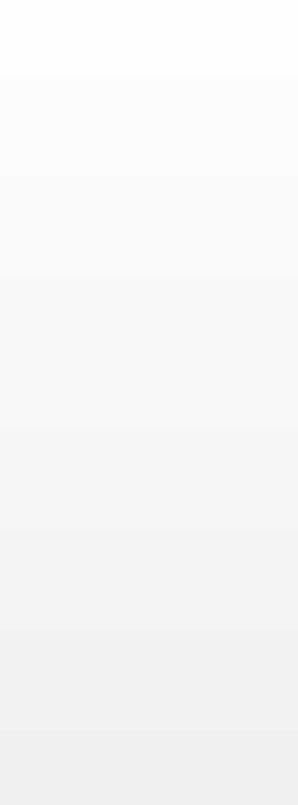

Izbornik


Rudeš – Samobor 111 - 54
RUDEŠ: Nikić 2, Jurič, Biondić, Cvitanović 6, Matolić 8, Savić 14,
Majić 20, Tomić 10, Nakić 6, Cvitković 23, Ljubičić 14, Skorupan 6
SAMOBOR: Srabotnak 4, Alilović, Došen 2, Kupres 2, Tlaninčić 4,
Komerečki, Čakanić, Grubešić 6, Matijaščić 14, Čižmešija 20
RUDEŠ: Nikić 2, Jurič, Biondić, Cvitanović 6, Matolić 8, Savić 14,
Majić 20, Tomić 10, Nakić 6, Cvitković 23, Ljubičić 14, Skorupan 6
SAMOBOR: Srabotnak 4, Alilović, Došen 2, Kupres 2, Tlaninčić 4,
Komerečki, Čakanić, Grubešić 6, Matijaščić 14, Čižmešija 20
1. kolo 05.10.2013
2. kolo 12.10.2013
Šanac – Rudeš 48 - 93
ŠANAC: Beber 28, Šarić 4, Jakšić 6, Ivčić 3, Lukačić 5,Trajanovski,
Mataković 2, Peris, Kos, Manjerović, Bastijančić, Goršić.
RUDEŠ: Matolić 4, Ljubičić 20, Cvitković 18, Skorupan 6, Majić 12,
Biondić 1, Tomić 10, Turić 4, Savić 10, Nikić, Nakić, Cvitanović.
ŠANAC: Beber 28, Šarić 4, Jakšić 6, Ivčić 3, Lukačić 5,Trajanovski,
Mataković 2, Peris, Kos, Manjerović, Bastijančić, Goršić.
RUDEŠ: Matolić 4, Ljubičić 20, Cvitković 18, Skorupan 6, Majić 12,
Biondić 1, Tomić 10, Turić 4, Savić 10, Nikić, Nakić, Cvitanović.
3. kolo 20.10.2013
Rudeš – Zagreb 69 - 73
RUDEŠ: Nikić, Jurič, Soldo, Cvitanović, Živković, Savić 27, Majić 10,
Tomić 1, Nakić, Cvitković 13, Ljubičić 16, Skorupan 2.
ZAGREB: Lotina, Bilić, Božić, Hernaus, Blažev 9, Jelovčić 13, Lazić
22, Jeličić, Ogrizović 3, Svilar 4, Habazin 15, Mikulić 7.
RUDEŠ: Nikić, Jurič, Soldo, Cvitanović, Živković, Savić 27, Majić 10,
Tomić 1, Nakić, Cvitković 13, Ljubičić 16, Skorupan 2.
ZAGREB: Lotina, Bilić, Božić, Hernaus, Blažev 9, Jelovčić 13, Lazić
22, Jeličić, Ogrizović 3, Svilar 4, Habazin 15, Mikulić 7.
4. kolo 27.10.2013
Petrinja – Rudeš 50 - 102
Rudeš: Nikić, Jurič 7, Biondić, Cvitanović 2, Savić 7, Majić 13, Tomić
15, Nakić 7, Cvitković 28, Ljubičić 17, Skorupan 6.
Petrinja: Šuker, Novaković, Križanović 10, Ljubešić 3, Gavranović 2,
Aščić 9, Beriša 10, Hajdarević, Tomušić 14, Mitar 2, Herceg.
Rudeš: Nikić, Jurič 7, Biondić, Cvitanović 2, Savić 7, Majić 13, Tomić
15, Nakić 7, Cvitković 28, Ljubičić 17, Skorupan 6.
Petrinja: Šuker, Novaković, Križanović 10, Ljubešić 3, Gavranović 2,
Aščić 9, Beriša 10, Hajdarević, Tomušić 14, Mitar 2, Herceg.
5. kolo 10.11.2013
Rudeš – Cedevita 62 - 66
Rudeš: Nikić, Jurič 3, Biondić, Cvitanović, Matolić 2, Savić 12, Majić
3, Tomić 13, Nakić, Cvitković 12, Ljubičić 17, Soldo.
Cedevita: Jacović, Kuzmanović 11, Lončar 8, Maglajlija 22, Montana 3,
Zelić, Mihalić 11, Valenčak, Medved 11, Ivanković.
Rudeš: Nikić, Jurič 3, Biondić, Cvitanović, Matolić 2, Savić 12, Majić
3, Tomić 13, Nakić, Cvitković 12, Ljubičić 17, Soldo.
Cedevita: Jacović, Kuzmanović 11, Lončar 8, Maglajlija 22, Montana 3,
Zelić, Mihalić 11, Valenčak, Medved 11, Ivanković.
CIBONA - RUDEŠ 94 - 85 (18:19,21:17,21:21,34:28)
Cibona: Martinac, Vujić 15, Jularić 15, Mandić 19, Matanović, Šunjić 7, Jelinić 22, Begić, Prša 4, Buljević 14, Nikić 2.
Rudeš: Soldo, Jurič 2, Biondić, Cvitanović, Matolić 6, Savić 22, Majić 21, Tomić 3, Nakić, Cvitković 8, Ljubičić 19, Skorupan 4.
Cibona: Martinac, Vujić 15, Jularić 15, Mandić 19, Matanović, Šunjić 7, Jelinić 22, Begić, Prša 4, Buljević 14, Nikić 2.
Rudeš: Soldo, Jurič 2, Biondić, Cvitanović, Matolić 6, Savić 22, Majić 21, Tomić 3, Nakić, Cvitković 8, Ljubičić 19, Skorupan 4.
6. kolo 16.11.2013
RUDEŠ - SAVIA 85:62 (24:16,20:20,23:12,18:14)
Rudeš: Soldo, Jurič, Biondić 3, Vujasinović 2, Cvitanović 2, Matolić 10, Savić 9, Majić 20, Tomić 15, Nakić 2, Cvitković 12, Skorupan 11.
Savia: Japić 9, T.Dobranić 8, Petrović, Radišić 9, J.Dobranić 6, Križanović 28, Šušnik, Soldat 2, Kolenc.
Rudeš: Soldo, Jurič, Biondić 3, Vujasinović 2, Cvitanović 2, Matolić 10, Savić 9, Majić 20, Tomić 15, Nakić 2, Cvitković 12, Skorupan 11.
Savia: Japić 9, T.Dobranić 8, Petrović, Radišić 9, J.Dobranić 6, Križanović 28, Šušnik, Soldat 2, Kolenc.
7. kolo 26.11.2013
8. kolo 30.11.2013
GORICA - RUDEŠ 65:107 (12:29,19:29,18:27,16:22)
Gorica: Slamnik 12, Pokrajčić, Jukić, Mikolaš 24, Herceg 12, Opačić, Tomić 10, Lepur 2, Kompes 4, Šipušić.
Rudeš: Soldo 2, Jurič 4, Biondić 3, Cvitanović 4, Matolić 6, Savić 16, Majić 15, Tomić 18, Nakić 2, Cvitković 18, Ljubičić, Skorupan 19.
Gorica: Slamnik 12, Pokrajčić, Jukić, Mikolaš 24, Herceg 12, Opačić, Tomić 10, Lepur 2, Kompes 4, Šipušić.
Rudeš: Soldo 2, Jurič 4, Biondić 3, Cvitanović 4, Matolić 6, Savić 16, Majić 15, Tomić 18, Nakić 2, Cvitković 18, Ljubičić, Skorupan 19.
9. kolo 13.12.2013
RUDEŠ – DUBRAVA 84:81 (23:22, 21:21, 23:19, 17:19)
Rudeš: Soldo, Žurić, Biondić, Cvitanović 2, Matolić 7, Savić 22, Majić 20, Tomić 2, Nakić, Cvitković 15, Ljubičić 12, Skorupan 4. Trener: N.Kukić
Dubrava: Filić 19, Šoprek 7, Kos 26, Gašpar 11, Jolić 2, Papić 4, M.Mikulić 5, Benčak, Nevistić, P.Mikulić 7. Trener: I.Lozanić
Rudeš: Soldo, Žurić, Biondić, Cvitanović 2, Matolić 7, Savić 22, Majić 20, Tomić 2, Nakić, Cvitković 15, Ljubičić 12, Skorupan 4. Trener: N.Kukić
Dubrava: Filić 19, Šoprek 7, Kos 26, Gašpar 11, Jolić 2, Papić 4, M.Mikulić 5, Benčak, Nevistić, P.Mikulić 7. Trener: I.Lozanić
SAMOBOR - RUDEŠ 60:82 (11:21,15:22,13:24,21:15)
Samobor: Srabotnak 13, Došen 4, Čakanić, Alilović, Ivišek 4, Grubešić 8, Peremin 6, Matijaščić 4, Komerički 3, Čižmešija 16, Živković 2.
Rudeš: Soldo, Jurič 12, Biondić, Pollak 2, Matolić 4, Savić 4, Majić 19, Tomić 11, Nakić 4, Ljubičić 14, Skorupan 12.
Samobor: Srabotnak 13, Došen 4, Čakanić, Alilović, Ivišek 4, Grubešić 8, Peremin 6, Matijaščić 4, Komerički 3, Čižmešija 16, Živković 2.
Rudeš: Soldo, Jurič 12, Biondić, Pollak 2, Matolić 4, Savić 4, Majić 19, Tomić 11, Nakić 4, Ljubičić 14, Skorupan 12.
10. kolo 25.01.2014
RUDEŠ - ŠANAC KARLOVAC 96:55 (23:18,28:9,24:15,21:13)
Rudeš: Biondić 5, Jurič 2, Pollak, Cvitanović 2, Matolić 13, Savić 20, Majić 33, Tomić, Nakić 2, Cvitković 10, Skorupan 9.
Šanac Karlovac: Peris, Mataković 6, Jakšić 8, Lukačić 8, Kos 5, Manjerović, Beber 15, Bastijančić, Šarić 13, Ivšić, Goršić.
Rudeš: Biondić 5, Jurič 2, Pollak, Cvitanović 2, Matolić 13, Savić 20, Majić 33, Tomić, Nakić 2, Cvitković 10, Skorupan 9.
Šanac Karlovac: Peris, Mataković 6, Jakšić 8, Lukačić 8, Kos 5, Manjerović, Beber 15, Bastijančić, Šarić 13, Ivšić, Goršić.
11. kolo 02.02.2014
12. kolo 08.02.2014
ZAGREB - RUDEŠ 73:69 (18:19,20:18,18:18,19:16)
Zagreb: Lotina, Bilić 4, Božić, Bašić, Blažev 8, Jelovčić 22, Hernaus, Jeličić 2, Ogrizović 2, Smolić, Mikulić 35.
Rudeš: Biondić, Jurič, Cvitanović, Matolić 5, Savić 10, Majić 31, Tomić 2, Nakić, Cvitković 11, Ljubičić, Skorupan 10.
Zagreb: Lotina, Bilić 4, Božić, Bašić, Blažev 8, Jelovčić 22, Hernaus, Jeličić 2, Ogrizović 2, Smolić, Mikulić 35.
Rudeš: Biondić, Jurič, Cvitanović, Matolić 5, Savić 10, Majić 31, Tomić 2, Nakić, Cvitković 11, Ljubičić, Skorupan 10.
CEDEVITA - RUDEŠ 61:84 (7:14,15:27,25:24,14:19)
Cedevita: Jacović 4, Kuzmanović 15, Lončar, Maglajlija 2, Blažević, Zelić, Mihalić 6, Balja 9, Barišić 15, Valenčak, Medved 10, Ivanković.
Rudeš: Biondić, Jurič, Soldo, Cvitanović, Matolić 6, Savić 18, Majić 32, Tomić, Nakić, Cvitković 18, Ljubičić 8, Skorupan 2.
Cedevita: Jacović 4, Kuzmanović 15, Lončar, Maglajlija 2, Blažević, Zelić, Mihalić 6, Balja 9, Barišić 15, Valenčak, Medved 10, Ivanković.
Rudeš: Biondić, Jurič, Soldo, Cvitanović, Matolić 6, Savić 18, Majić 32, Tomić, Nakić, Cvitković 18, Ljubičić 8, Skorupan 2.
13. kolo 22.02.2014
14. kolo 02.03.2014
RUDEŠ - CIBONA 82:79 (20:20,22:22,23:17,17:20)
Rudeš: Biondić, Jurič, Soldo, Cvitanović, Matolić, Savić 15, Majić 14, Tomić 10, Nakić, Cvitković 18, Ljbičić 24, Skorupan 1.
Cibona: Martinac, Mandić 14, Jularić 13, Maloča 6, Laktić, Šunjić 8, Jelinić 4, Nakić-Vojnović, Prša 10, Begić, Buljević 15, Nikić 9.
Rudeš: Biondić, Jurič, Soldo, Cvitanović, Matolić, Savić 15, Majić 14, Tomić 10, Nakić, Cvitković 18, Ljbičić 24, Skorupan 1.
Cibona: Martinac, Mandić 14, Jularić 13, Maloča 6, Laktić, Šunjić 8, Jelinić 4, Nakić-Vojnović, Prša 10, Begić, Buljević 15, Nikić 9.